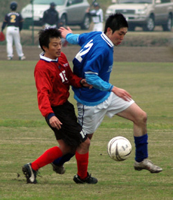
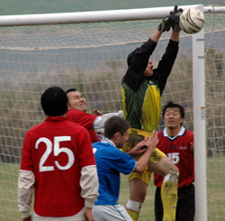

|
Misato, Sun 19th Nov. Not the prettiest exhibition of football on a cold damp Misato morning but another 3 Points on the board for WSG, although they did make it hard on themselves against a 9 man Jetro.
The game started in the same manner as the weather conditions and it took a surprise counter attack to rudely awaken the sleepy Geckoes. Jetro broke quickly and their sprightly winger found the head of Kobayashi leaving WSG 1-0 down and facing another humiliating defeat for the 2nd time this season.
The introduction of Gino Dilberto into the middle of the park provided some much needed bite but poor finishing kept the scores level going into the break. After a stern bollocking from "Rob Manager" the Geckoes started the 2nd half with a much- improved attitude and it was not long after the restart that Kaz laid of a lovely ball to new boy Paul James who made no mistake with the finish bringing WSG back into the game.
Soon after Kaz was involved again, this time bagging a goal of his own after a lovely side step that left him clear in the 18yard box with just the keeper to beat, 2-1 WSG. 
There then followed one of the most controversial penalty in TML history, unusually this time not the result of a dubious refereeing decision. (Quentin himself looked confused for a couple of seconds). For whatever reason, a Jetro defender decided to simply catch the ball in the 18yard box from a seemingly innocuous cross, leaving every player on the park (except the catcher) wondering what on earth was going on. Quentin had no choice but to award a penalty for sheer stupidity and Mikel Troen stepped up to slot home from the spot.
Simply surreal.
Report by Gary Stout
|